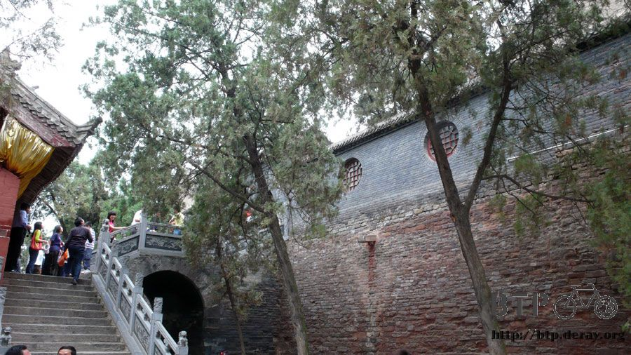

Touring the Ancient Capital
Strolling down the streets of Louyang in the morning, surprisingly,
you can’t find that restaurants open for breakfast. Wondering around, finally found a restaurant filled with steam from steamers.
I ordered a bowl of eight-treasure rice soup, according to the boss lady.
But it was not sweet at all : ( and they wouldn’t add sugar for me, either.
Also saw the steamers have steamed meat buns and they looked delicious. Asked for price, 0.4 RMB for 1 bun.
She brought me one tray and it had 10 buns. The boss lady asked me if I can finish them.
Can anyone eat 10 steamed buns first thing in the morning?
I ordered 5 of them. Plus a bowl of non-sweet eight-treasure rice soup for breakfast. Total 2.5 RMB.
After breakfast, got on Dido and headed to bookstore, just like the travel agent said, to buy a map of Louyang. One map, 2 RMB.
That was a little bit expensive. It was just a piece of paper.
I asked the owner to mark my current location on the map.
This was just in case if I get lost and can’t find my way back to the hotel. That would be embarrassing.
Next, asked how to get to the old town of Louyang.
Come to find out the old town has become the “Sui Tang Dynasties Ruins Botanical Garden”
Louyang is also known as ancient capital of nine dynasties. According to Chinese history,
there were at least thirteen dynasties, Xia, Shang, Eastern Zhou, Eastern Han, Cao Wei, West Jin, Norhtern Wei, Sui and Tang,
named Louyang as the capital. Louyang had been the capital for 1529 years and it is the oldest capital in Chinese history.
Passed through a big bridge – Louyang Bridge with Lou River flow below it.

Followed the map and found the entrance to the Old Town without any problem and it’s free!
I was excited and ready to get in. One of employees stopped me and said bicycles are not allowed inside and I have to leave it outside.
Well, how could I part with Dido? I could not leave him here and go inside by myself.
In that case, let’s say I have been here even though I stopped at the entrance.

I have been riding Dido all morning in downtown. There were a lot of buses and the city was well developed.
City landscape was very greenery and had a similar feeling as Ta-an district in Taipei.
At 10:30, after wondering around, I was going to go to the White Horse Temple, a must visit tourist attraction.
But if they wouldn’t allow bicycles inside, I would have to stop at the entrance again and it would be ashamed.
So my plan was to take a bus in the afternoon so it wouldn’t be a waste of trip.

I saw a cute little girl riding backward on her mom’s bike. Actually this is very scary.
Those who have ridden backward on motorcycles would know.
On the side walk, there were many old men playing Chinese chess.
All the pieces were huge and there were a lot of audiences.
Here, evidently the rule of bystanders are not allowed to give any suggestions didn’t exists.
Everyone had his own option on what the next move should be and they were very excited about it.
They weren’t afraid to give any tactical advices. Some were even cursing unrelentingly if a bad move was made.
That’s because the rule of can not retracting a move is still valid here.
On the way back to the hotel, I bought a roast chicken (15 RMB). Just by looking at it made my mouth watering.
The same restaurant also sells hot and spicy rabbit meat. But I wouldn’t dare to eat bunnies.

Just have chicken seems to be strange,
so I stopped by the restaurant I went to this morning and bought some vegetable buns to go with the chicken.
Vegetable and meat buns are the same price, 0.4 RMB. But obviously the vegetable ones are much bigger.
One tray of steamer can fit 10 meat buns and still has plenty of space left. But it can only fit 7 vegetable buns.

Back to the hotel and enjoyed my lunch and then took a nap. I could have a leisure afternoon….
Woke up at 2:00, took a bottle of Pepsi and got on bus number 58.
Bus fare for one-way is 1.5 RMB. We headed toward the White Horse Temple.
Louyand buses announce the stop name after arriving at each stop so it is very difficult to get lost.
You can pay cash or use something similar to metro cards. Who says China is falling behind?

The bus ride was about half hour.
Along the temple were all vendors and their signs were all consistent with blank background and yellow characters.
Even though there were a lot of vendors, but every thing were well organized.
Also surprisingly, there were many trash cans and cleaning crews.
It was very clean and it made people to fall in love with it.
I bought a ticket for 35 RMB. And bikes are not allowed here. Luckily I took a bus….Whew………
When I was at outside, I saw a lot of tourists. After went inside and there were even more.
The White Horse Temple is the first Buddhist temple built in China.
For devoted Buddhist believers here would be considered a holy place they have to visit at least once in their lifetime.
There were so many incenses burning that they were burning in flame.
The whole combustible base was filled with burning incenses.

If you have enough people in a group, you can ask one of the masters from the temple to give you a tour.
Because I was by myself, so I just blended right into other people’s group and listened to the stories about the White Horse Temple.

A long time ago, some one dreamed of a ramble of thunders or something like that.
He took it as a sign and walked toward the west.
He ran into two monks from Indian at Afghanistan, so he invited them to China to preach and translate Buddhist text.
People built this temple for these two monks.
Because the Buddhist text was carried by a white horse, they named this temple after the white horse.

This story might sound boring at the beginning.
But this event took place in East Han Dynasty (25 AD to 220 AD), five or six hundred years prior to Xuanzang.

The master who was giving us a tour is named Miaotian (same name as the con artist in Taiwan)
He was first trained in Shaolin Monastery. He then went to Xiangguo Temple and now stays at White Horse Temple.
There are over a hundred monks in the White Horse Temple learning Buddhism
and hoping one day they will relieve the suffering in reincarnation.

The master asked me where I am from.
This is the first time I told the truth that I am from Taiwan.
After found out that I am traveling by bike, he asked where I was staying.
This is because he can help me to find a spot to stay in White Horse Temp. And for FREE …. : )
Unfortunately, I have to leave Louyang tomorrow.
Otherwise, I could have an opportunity to stay overnight at the White Horse Temple.
Waking up early in the morning, attending morning session with the masters,
saying the prayers and then hitting the bell and drum at the bell tower for 108 times, which represents elimination of 108 temptations.
The White Hoarse Temple is not just a single architecture structure.
After several renovations and expansions, there are several halls, including Mahavira Hall, Main Hall, Hall of Great Buddha…, etc.
Today, Mahavira Hall worships Buddha statues that were made by the lost of ancient technique.
Because they are very precious national treasures, lights are not allowed inside and not opened to public.
Visitors can only observe from outside.
The master said that Gautama Buddha always brought Ananda, one of his disciples, to his sermons.
Why Ananda?
Because Ananda had a very good memory and he could remember every word the Gautama Buddha said at his sermons.
A lot of text we read today was written by him. We should thank him for his good memory.
The legend said that when the Gautama Buddha was teaching at his sermons, he would also bring along 2 fairies.
When he talked about something very interesting, these two fairies would fly up into the sky and spread flower petals.
This is where the phrase “flying goddess spread flowers” came from.
I don’t know why, but when I heard the story, it reminded me of Aju and Ahua
(two of background singers and dancers of a famous Taiwanese singer)
Listened to the master explaining the temple to us, everything was so new to me and they were very interesting.
Sitting under the rooftop of the temple and drinking free hot tea, it almost made me feel that I want to become a monk.
Along the temple are two tombs. There several thousands years old sacred relics from monks inside the tombs.
I wondered if they were from the two Indian monks that were stopped at Afghanistan.

There are many bamboos and fragrant irises planted around the tombs. Very beautiful ~
After spending two hours here, I am still not getting enough.
35 RMB for a ticket is definitely worth it. People who are interested in Buddhism should be very touched if they are here.
I saw several older female visitors were kowdowing from the first statue of Guan Yin to the last statue of Gautama Buddha
Back to downtown, dinner was the vegetarian duns bought at the lunch time. One day in Louyang ended too quickly.
Tomorrow, I will continue head toward Xi’an. If everything goes well, I should be there in two to three days.